정보통신기사(구) (2002-09-08 기출문제)
1과목: 디지털 전자회로
1. 다음 연산 증폭기의 Diode에 흐르는 전류 ID는? (단, R1=2[㏀], Vi=4[V], Vo=0.8[V]임)
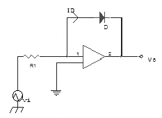
- 0.5 [㎃]
- 0.2 [㎃]
- 2 [㎃]
- 5 [㎃]
(정답률: 알수없음)

2. 다음 논리식을 간단히 하면?
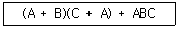
- BC
- 1
- A + BC
- A + B + C
(정답률: 알수없음)
3. 그림은 무슨 Filp-Flop 회로인가?
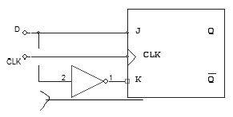
- M-S FF
- S-R FF
- CLK FF
- D FF
(정답률: 알수없음)
4. 그림의 회로에서 입력전압 Vi와 출력전압 Vo의 관계 곡선은?
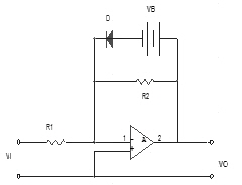
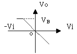
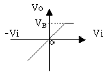
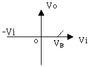
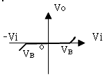
(정답률: 알수없음)
5. 드레인 접지형 FET 증폭기의 특성을 설명한 것중 옳지 않은 것은? (단, FET의 파라미터 gm은 상호 전도도이다)
- 출력저항은 약 1/gm 이다.
- 전압이득은 약 1이다.
- 입력신호전압과 출력전압은 동상이다.
- 입력저항은 매우 낮다.
(정답률: 알수없음)
6. 여러 신호를 단일 회선을 이용하여 공동으로 전송하는데 필요한 장치는?
- 엔코더(encoder)
- 디코더(decoder)
- 디멀티플렉스(demultiplexer)
- 멀티플렉스(multiplexer)
(정답률: 알수없음)
7. 부궤환 증폭회로를 사용하여 이득이 1/2배로 줄어들면 대역폭은?
- 2배로 넓어진다.
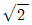
배로 넓어진다.- 변함이 없다.
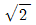
배로 좁아진다.
(정답률: 알수없음)
8. 다음과 같은 RC 발진회로에서 발진주파수 fo 는?
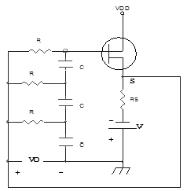
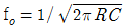
- fo = 1/2π RC
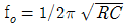
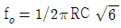
(정답률: 알수없음)
9. 멀티 바이브레이터의 단안정,무안정,쌍안정의 결정은 어떻게 결정되는가?
- 결합회로 구성
- 전원전압크기
- 바이어스전압 크기
- 전원전류의 크기
(정답률: 알수없음)
10. 그림의 발진회로에서 발진이 시작될 때회로에서 필요한 전압이득 Av는 얼마인가?
- Av ＞10
- Av ＞29
- Av ＞30
- Av ＞100
(정답률: 알수없음)
11. 논리회로를 구성하고자 할때 IC에 내장되어 있는 AND, NOR, NOT, X-OR, F/F 등의 논리소자 중에서 선택적으로 퓨즈를 절단하는 방법으로 사용자가 직접 기록 (write)할 수 있는 PAL 또는 PLA와 같은 IC는 다음중 어디에 속하는가?
- PLC
- PLD
- PLL
- RAM
(정답률: 알수없음)
12. 그림과 같은 반파 정류회로의 동작 설명과 관련이 없는 것은?
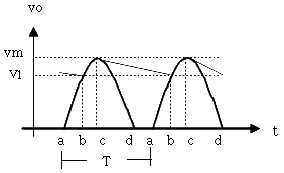
- 평활 콘덴서에 충전전류가 흐르는 기간은 파형의 bc 기간동안이다.
- 리플전압의 p-p 값은 vm-v1 이다.
- 입력교류 주기는 T 이며, 리플주기와 같다.
- 출력전류 전압의 평균값은 v1이 되며, 이 값은 부하에 비례한다.
(정답률: 알수없음)
13. 어떤 발진기에서 전압이득이 50이다. 궤환회로의 감쇠는 얼마여야하는가?
- 1
- 0.01
- 10
- 0.02
(정답률: 알수없음)
14. 그림과 같이 결선된 논리회로의 논리식은?
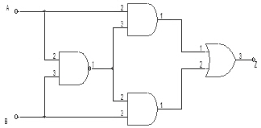
- Z = (A+B)AㆍB
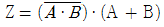
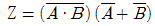
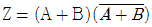
(정답률: 알수없음)
15. 다음 중 데이터 분배회로로 사용되는 것은?
- 인코더(Encoder)
- 시프트레지스터(shift register)
- 멀티플렉스(Multiplexer)
- 디멀티플렉스(demultiplexer)
(정답률: 알수없음)
16. 홀수패리티에 대한 설명중 틀린 것은?
- 1의 비트수가 짝수이면 패리티비트를 1로 만든다.
- 1의 비트수가 짝수이면 패리티비트를 0으로 만든다.
- 데이터 전송에 사용하며, 구현이 간단하다.
- 동시에 두 개의 비트가 변하면 검출를 하지 못한다.
(정답률: 알수없음)
17. 단일측파대 통신방식에 사용되는 변조방식은?
- 베이스 변조
- 콜렉터변조
- 제곱변조
- 링 변조
(정답률: 알수없음)
18. 평형변조기에 반송파 cosω ct와 신호파 cosω mt을 입력시켰을 때 출력에 나타나는 파형은?
- (1 + cosω mt)cosω ct
- ½cos(ωc + ωm)t + cos(ωc -ωm)t
- ½cos(ωc + ωm)t
- ½cos(ωc - ωm)t
(정답률: 알수없음)
19. 다음과 같은 이상적인 연산증폭기에서 Vi / i 는?
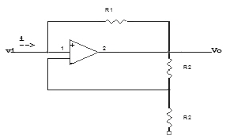
- -R1
- -R2
- R1 + R2
- -(R1 + R2)
(정답률: 알수없음)
20. 드레인 전압이 30[V]의 접합형 FET에서 게이트 전압을 0.5[V] 변화 시켰더니 드레인 전류가 2[㎃] 변화하였다. 이 FET의 상호 콘덕턴스는 얼마인가?
- 0.1[m℧]
- 1[m℧]
- 4[m℧]
- 6[m℧]
(정답률: 알수없음)
2과목: 정보통신 시스템
21. 광송신기의 출력이 -3[dBm], 광수신기의 수신강도가 -36[dBm], 광섬유의 손실이 1[dBm]이다. 만약 접속 손실과 광커넥션 손실을 무시할 수 있다면, 이러한 광전송 시스템이 무중계로 전송가능한 최대거리는?
- 33[km]
- 66[km]
- 99[km]
- 132[km]
(정답률: 50%)
22. 다음중 ITU-T NO.7 신호방식에서 에러정정으로 고신뢰도의 신호메세지를 전송할 수 있도록 해주는 곳은?
- 신호데이터링크부
- 신호링크기능부
- 신호망기능부
- 신호접속제어부
(정답률: 알수없음)
23. 데이터링크 계층에서 처리하는 기능이 아닌 것은?
- DTE/DCE 간 인터페이스 기능
- 연속된 테이타를 전송단위로 분할하는 기능
- 전송단위의 순서제어 및 흐름제어기능
- 전송에러 검출 및 회복기능
(정답률: 알수없음)
24. 장치나 시스템이 고장에서 다음 고장까지의 평균 시간, 즉 고장 없이 기능이 정상 운영되는 평균 시간은?
- MTTR
- ETB
- MTBF
- STX
(정답률: 알수없음)
25. 동기식 전송과 비동기식 전송의 근본적인 차이는?
- 필요로하는 대역
- 펄스의 높이
- 비동기식전송에서는 데이터에 클럭이 포함
- 동기식전송에서는 데이터부터 클럭을 추출
(정답률: 알수없음)
26. 전화, 데이터, 비디오텍스, 텔리텍스, 팩시밀리와 같이 단일 서비스를 제공하는 N-ISDN에서 가입자 에게 공급하는 디지털채널의 구조는 어떠한 형태인가?
- 2B+D
- 23B+D
- 30B+D
- 64B+D
(정답률: 알수없음)
27. 데이터 전송을 위한 변복조에서 심벌간의 간섭, 다경로 확산, 첨가 잡음 및 페이딩에 의한 왜곡이 생겨서 수신되는 경우가 있으므로 이를 방지하기 위한 것은?
- 대역여파기
- 디스크림블러
- 등화기
- 채널디코더
(정답률: 34%)
28. 어느 것이 HDLC의 프레임 구조인가?
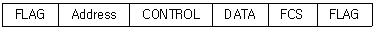
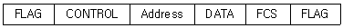
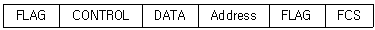
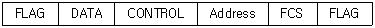
(정답률: 64%)
29. 패킷교환망에서 우수한 라우팅 알고리즘(routing algorithm)이 갖추어야 될 성질로서 적합하지 않은 것은?
- 최적의 패킷 전송시간(optimality)
- 자원할당의 공정성(fairness)
- 라우팅 결정의 안정성(stability)
- 라우팅 경로의 이중성확보(duality)
(정답률: 알수없음)
30. IMT 2000 표준 중 동기식과 비동기식의 가장 큰 차이점은 무엇인가?
- 음성 다지털 부호와 방식
- 무선 다원 접속 방식
- 데이터 전송 방식
- 구성 시스템간 동기 유지 방식
(정답률: 알수없음)
31. 광섬유(fiber optic)에 대한 설명으로 틀린 것은?
- 용량 성장의 잠재성이 높다.
- BER(bit error rate)이 낮다.
- 보안성이 좋다.
- 반복기(repeater)들 간의 간격이 짧다.
(정답률: 59%)
32. 가상회선(Virtual Circuit) 패킷교화방식과 데이타그램(data gram) 패킷교환방식의 공통점이 아닌 것은?
- 패킷들은 절달될 때까지 저장되기도 한다.
- 각 패킷에 대하여 경로를 선택해야 한다.
- 전용선로는 없다.
- 대역폭 사용이 융통적이다.
(정답률: 알수없음)
33. HDLC의 프레임 펄스 중 오류제어 정보를 가지고 있는 펄스는?
- 플래그
- 프레임검사 시퀀스
- 제어부
- 정보부
(정답률: 알수없음)
34. 파장분할 다중전송방식의 장점이 아닌 것은?
- 양방향성 전송이 가능하다.
- 서로 다른 신호의 동시전송이 대체로 용이한다.
- 회로구성이 비교적 간단하다.
- 대용량화가 가능한다.
(정답률: 알수없음)
35. OSI-7 Layer를 하부 Layer에서부터 상부 Layer까지 옳게 나열한 것은?
- Physical - Data Link - Transport - Network - Presentation - Session - Application
- Physical - Data Link - Network - Session - Transport - Presentation - Application
- Physical - Data Link - Network - Transport - Session - Presentation - Application
- Physical - Network - Data Link - Session - Transport - Presentation - Application
(정답률: 알수없음)
36. 50개국을 망형으로 구성할 경우 필요한 중계회선수는?
- 25
- 49
- 1200
- 1225
(정답률: 알수없음)
37. 음성, 비음성의 다양한 통신 서비스를 하나의 통신망으로 종합적으로 제공하는 통신시스템은?
- TCP/IP망
- PSTN
- PSDN
- ISDN
(정답률: 알수없음)
38. 광섬유를 기본으로 하는 통신망과 관계가 적은 것은?
- FDDI
- ATM
- SONET
- TOKEN-BUS
(정답률: 알수없음)
39. 일반 단말(NPT)과 PAD간 통신에 이용되는 프로토콜은?
- X.3
- X.25
- X.28
- X.29
(정답률: 알수없음)
40. 데이터회선교환방식에 대한 설명 중 옳은 것은?
- 통신경로가 물리적으로 통신종료시까지 구성된다.
- 전송대역폭 사용이 매우 융통적이다.
- 일반적으로 전송속도 및 코드변환이 가능한다.
- 소량의 간혈적인 통신에 매우 효율적이다.
(정답률: 20%)
3과목: 정보통신 기기
41. 전자교환기에서 축적프로그램 제어방식을 사용함으로써 얻을 수 있는 결과가 아닌 것은?
- 공통제어 장치수의 증가
- 고도의 신뢰성
- 시설비의 저렴화
- 다양한 기능의 변경, 추가 등이 용이함
(정답률: 알수없음)
42. 주파수 변별기의 기능을 바르게 나타낸 것은?
- ＦＭ파의 주파수 변화를 진폭변화로 바꾸어 신호파를 검출한다.
- 송신측에서 보낸 높은 신호를 억제하므로 원래의 신호를 충실히 재생한다.
- 반송파가 없을 때 저주파 증폭기의 동작을 중지시켜 출력을 차단한다.
- 진폭성분을 제거하고 일정 진폭의 ＦＭ파를 얻게한다.
(정답률: 알수없음)
43. 다음중 CATV의 기본구성에 속하지 않는 것은?
- 헤드엔드
- 교환장치
- 가입자 설비
- 중계전송망
(정답률: 알수없음)
44. 전송관련 장비중에서 실제 데이터가 있는 단말장치에만 동적인 방식으로 각 부채널에 시간폭을 할당하는 것은?
- 동기식 다중화기
- 지능 다중화기
- 지능 변복조기
- 공동이용기
(정답률: 알수없음)
45. 다음중 new media의 특성과 관계가 가장 깊은 것은?
- 적어도 둘 이상의 자료형을 사용해야 한다.
- 상호매체간의 거리가 근거리이어야 한다.
- 사용자에게 획일화된 자료를 제공해야 한다.
- 쌍방통신에 의해 정보 접근이 용이해야 한다.
(정답률: 알수없음)
46. 교환원 대신에 전화교환의 조작을 행한 최초의 자동교환기는?
- 기계식 교환기
- 크로스바 교환기
- 진공관식 교환기
- 스탭 바이 스탭 교환기
(정답률: 알수없음)
47. 디지털 전송에서 등화된 파형을 가지고 디지털 파형으로 복원하기 위한 과정에서 확률적으로 0과 1을 판정하는데 오류를 최소화하고, 신호대 잡음비를 개선하기 위하여 사용 되는 것은?
- 등화기
- 정합필터
- 스크램블러
- 자동이득 조절기
(정답률: 알수없음)
48. 다음중 데이터 전송제어장치의 설명이 잘못된 것은?
- 통신회선의 종단에 위치하여 전송에 유리한 신호로 변화한다.
- 전송신호의 동기제어, 송수신학인, 전송절차의 제어를 한다.
- 아날로그 전송로엔 모뎀, 디지털 전송로엔 DSU가 사용된다.
- 데이터의 송수신과 송수신 문자의 조립과 분해를 한다.
(정답률: 알수없음)
49. 다음은 푸시버튼 전화의 기능과 특성에 대한 설명이다. 옳지 않은 것은?
- 1개의 임펄스 숫자는 종횡 2개의 음성 대역내 주파수에 대응된다.
- 데이터 전송용 또는 원격제어용에도 사용할 수 있다.
- 2개의 ＬＣ동조회로로 구성된 주파수 발진회로가 있다.
- 저역군 3주파수와 고역군 3주파수와의 2개이 주파수대를 조합하여 선택신호를 구성한다.
(정답률: 알수없음)
50. MHS의 구성요소로서 이용자로부터 의뢰된 메시지를 MTA로 발사하고 이용자에게 메시지 편집기능 및 메일박스 등을 제공하는 서비스는?
- UA
- MTA
- MS
- AU
(정답률: 알수없음)
51. 팩시밀리 장치에서 주사기능과 광전변환기능을 가지며, 고속주사가 가능한 주사 소자는?
- 포토 다이오드
- LED
- CCO(charge coupled device）
- 광 트랜지스터
(정답률: 알수없음)
52. 데이터 종신용 터미널의 전송제어 기능이 아닌 것은?
- 입출력 변환기능
- 입출력 제어기능
- 오류 제어기능
- 송수신 제어기능
(정답률: 알수없음)
53. 위성통신에서 통신회선의 공동이용 방법이 아닌 것은?
- 폴링(polling）
- 경쟁(contention）
- 예약(reservation）
- 가상(virtual）
(정답률: 알수없음)
54. 통신제어장치에 대한 설명이 옳지 않은 것은?
- 회선과 컴퓨터 사이의 데이터 입출력을 조정한다.
- 처리된 데이터의 결과를 단말에 전송한다.
- 수신된 데이터를 연산처리 한다.
- 회선의 오류를 정정한다.
(정답률: 알수없음)
55. 마이크로파 통신방식에서 변환된 중간주파수를 증폭후 다시 마이크로파로 변환하여 송신하는 중계방식은?
- 직접 중계방식
- 검파 중계방식
- 베이스밴드 중계방식
- 헤테로다인 중계방식
(정답률: 알수없음)
56. 디지털 데이터의 형태로 전송할 때 필요한 회선종단장치는?
- 자동응답기
- 호출기
- 디지털 서비스 유니트
- 모뎀
(정답률: 알수없음)
57. 통신 위성의 공통 기기가 아닌 것은?
- 중계기(Transponder）
- 태양전지(Solar panel）
- 텔레매트리 명령계
- 추진계
(정답률: 알수없음)
58. 다음중 공중 전화망을 이용하여 컴퓨터 통신을 할 때 반드시 필요한 컴퓨터 주변기기는?
- FAX
- MIDI
- MODEM
- PCS
(정답률: 알수없음)
59. 텔레텍스트의 미디어 기본특성이 아닌 것은? (비디오텍스와 비교)
- 쌍방향 통신
- 축적정보량이 적음
- 다수 수신자가 동시접속
- 단방향 동시분배
(정답률: 50%)
60. 호스트 컴퓨터와 변복조기 사이에 설치되어 여러대의 터미널이 하나의 공통포트를 이용하도록 해주는 장비는?
- 포트공동이용기
- 포트선택기
- RS－232－C
- RS－449－A
(정답률: 알수없음)
4과목: 정보전송 공학
61. 무장하 케이블의 2차 정수인 α와 위상정수 β는 저주파에서 주파수 f와 어떤관계인가?
- α는
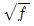
, β는 f에 반비례한다. - α는 f, β는
 에 반비례한다.
에 반비례한다. - α와 β는 모두 f에 비례한다.
- α와 β는 모두
 에 비례한다.
에 비례한다.
(정답률: 알수없음)
62. 다음의 전송제어 절차를 순서에 맞게 기술한것은?
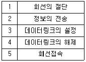
- 5 - 3 - 2 - 4 - 1
- 1 - 4 - 2 - 3 - 5
- 3 - 5 - 2 - 1 - 3
- 3 - 1 - 2 - 5 - 3
(정답률: 알수없음)
63. 메시지 대역폭을 B라 할때 AM 전송에 필요한 전송대역폭은 얼마인가?
- 0.5B
- B
- 1.5B
- 2B
(정답률: 알수없음)
64. 다음의 블록도는 어떤 디지털 변조방식을 검파하는 과정이다. 다음 방식은 어떤방식인가?
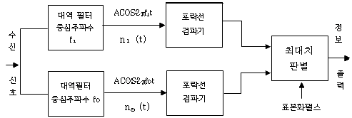
- ASK
- FSK
- PSK
- QAM
(정답률: 알수없음)
65. 인켑슐화에 사용되는 제어 정보가 아닌 것은?
- 주소
- 에러 검출부호
- 프로토콜제어
- 유료부하
(정답률: 알수없음)
66. 세 개의 코드 C1, C2, C3가 각각 0. 6. 0. 3. 0. 1의 확률을 갖고 쓰여질 때, 코드의 평균길이(average code length)는 얼마인가? ( C1코드: 0 C2코드: 10 C3코드: 11)
- 1.2
- 1.4
- 1.6
- 1.8
(정답률: 알수없음)
67. 균일양자화 과정에서 계단(step) 간격의 크기를 증가시키면 발생되는 현상은?
- SNR (신호대 잡음비)이 증가한다
- 엘리아싱 현상이 심해진다
- 표본화 주파수가 증가한다.
- 양자화 잡음이 증가한다
(정답률: 알수없음)
68. HDLC 전송제어에서 사용하는 동작 모드가 아닌 것은?
- 정규응답모드(NRM)
- 초기 모드(IM)
- 비동기 평형모드(ABM)
- 비동기 응답모드(ARM)
(정답률: 알수없음)
69. 광케이블 장점을 설명한 것 중 잘못된 것은?
- 광대역성이다
- 저손실이다
- 전력유도(상시유도)를 받지않는다
- 전파속도가 대단히 느리다
(정답률: 알수없음)
70. 다음 데이터 변조 방식중 위상 변조방식에 사용되지 않는 것은?
- 위상반전 변조방식(1비트)
- 3상 변조방식(3비트)
- 4상 변조방식(2비트)
- 8상변조방식(3비트)
(정답률: 알수없음)
71. 광 중계기의 구성품이 아닌 것은?
- 광전 변환기
- 전기신호 중계기
- 전광 변환기
- 광화이버
(정답률: 알수없음)
72. 다음 그림은 정보기입 방식별 파형이다. 이의 명칭은?
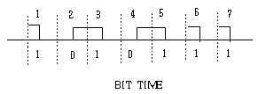
- RZ 파형
- NRZ 파형
- NRZI 파형
- Biphase 파형
(정답률: 알수없음)
73. 다음 중 병렬 전송 방식의 특징이 아닌 것은?
- 데이터 전송 속도가 빠르다.
- 컴퓨터와 프린터간에 이용된다
- 원거리 전송에 적합하다.
- 전송로 비용이 비싸다
(정답률: 알수없음)
74. N 개의 ASCII 문자를 수평, 수직 패리트 문자로서 검사 할때 코드효율은?
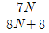
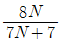
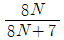
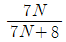
(정답률: 알수없음)
75. 광섬유 케이블의 재료 손실중에서 산란으로 인한 손실이 아닌 것은?
- Rayleigh 손실
- 접속손실
- Raman 손실
- Brillouin 산란
(정답률: 알수없음)
76. 베이스 밴드전송의 부호펄스에서 디지털 비트 구간의 절반(1/2)지점에서 항상 신호의 위상이 변화하는 부호는?
- 바이폴라
- AMI
- NRZ
- 맨체스터
(정답률: 알수없음)
77. 발생 다항식을 이용하는 오류제어가 HDLC의 프레임 체크 시퀸스로 사용된다. 다음중 어느 형식의 제어가 적당한가?
- 수직 패리티 체크
- 군계수 체크
- 수평수직 패리티 체크
- 싸이클릭 리던덴시체크
(정답률: 알수없음)
78. 다음 전송시스템의 부호화에 대한 설명중 틀린 것은?
- 전체효율 = 코드효율 / 전송효율
- 전체효율 = 코드효율 × 전송효율
- 코드효율 = 정보비트수 / 전체비트수
- 전송효율 = 정보펄스의 수 / 전체펄스의 수
(정답률: 알수없음)
79. 위성통신에서 위성을 효과적으로 운영하기 위한 다자간 접속 프로토콜 로 사용되지않는 것은?
- WDMA(파장분할다중엑세스)
- TDMA(시분할 다중엑세스)
- FDMA(주파수분할다중엑세스)
- CDMA(코드분할다중엑세스)
(정답률: 알수없음)
80. HDLC에서 1개의 프레임 구성에서 사용되는 프래그(Flag)는 모두 몇 비트인가?
- 8비트
- 16비트
- 32비트
- 24비트
(정답률: 알수없음)
5과목: 전자계산기일반 및 정보통신설비기준
81. “cpu레지스터, 캐쉬기억장치, 주기억장치, 보조기억장치”로 기억장치의 계층구조 요소를 구성하고 있다. 이들 중에서 처리속도가 가장 빠른 것과 가장 느린 것으로 짝을 지는 것은?
- 캐쉬기억장치 - 주기억장치
- CPU 레지스터 - 캐쉬기억장치
- 주기억장치 - 보조기억장치
- CPU 레지스터 - 보조기억장치
(정답률: 알수없음)
82. 현 상태에서 다음 상태로 코드의 그룹이 변화할 때 단지 하나의 비트만이 변화되는 최소 변화 코드의 일종이며, 또한 비트의 위치가 특별한 가증치를 갖지 않는 비가중치코드로서 산술 연사에는 부적합하고 입출력 장치와 A/D변환기와 같은 응용장치에 많이 사용하는 코드 체계는?
- 3초과 코드(EXCESS-3 CODE)
- 8421코드(8421 CODE)
- 그레이코드(GRAYCODE)
- 해밍 코드(HAMMING CODE)
(정답률: 알수없음)
83. 기간통신사업자가 전기통신역무에 관한 요금, 기타 이용조건을 정하여 정보통신부장관의 인가를 받은 것을 무엇이라 하는가?
- 시행규정
- 이용약관
- 시설기준
- 시험규칙
(정답률: 알수없음)
84. 정보통신공사업자가 아닌 자가 시공할 수 있는 경미한 공사는?
- 정보통신부장관이 고시하는 단말기의 설치 공사
- 정기통신 시설물의 전력 유도방지 설비공사
- 종합유선방송 시설의 설비공사
- 전기통시용 지하관로의 설비공사
(정답률: 20%)
85. 중앙처리장치의 구성에 해당되지 않는 것은?
- 레지스터
- 입력장치
- 연산장치
- 제어장치
(정답률: 알수없음)
86. 정부통시부장관이 전기통신기술의 진흥을 위하여 수립, 시행하는 시행계획에 포함되는 사항이 아닌 것은?
- 전기통신기술의 표준화
- 전기통신 기자재의 시험업무
- 새로운 전기통신방식의 채택
- 전기통신술 연구기관 또는 단체의 육성
(정답률: 알수없음)
87. 기간통신사업자가 정보통신설비와 이에 연결되는 다른 정보통신설비 또는 단말장치와의 사이에 정보의 상호 전달을 위하여 공시하여야 하는 것은?
- 통신규약
- 이용약관
- 분계점
- 기술기준
(정답률: 알수없음)
88. 다음 중에서 순서도의 기본형이 아닌 것은 어느 것인가?
- 직선형
- 분기형
- 반복형
- 문자형
(정답률: 알수없음)
89. 전기통신사업은 어떻게 구분하는가?
- 전화통신사업, 정보통신사업, 우선통신사업
- 유선통신사업, 무선통신사업, 데이터통신사업
- 특정통신사업, 공중통신사업, 일반통신사업
- 기간통신사업, 별정통신사업, 부가통신사업
(정답률: 알수없음)
90. 기업에서 판매하는 PC를 구입하면 기본적으로 운영체제와 오피스 관련 프로그램을 제공한다. 이렇게 제품과 함께 제공되는 프로그램을 무엇이라 하는가?
- 번들 프로그램
- 크리풀웨어(Crippleware)
- 프리웨어(Freeware)
- 쉐어쉐어(Shareware)
(정답률: 알수없음)
91. 정적(STATIC) RAM에 비교하여 동적(DYNAMIC) RAM의 특징 설명으로 적당하지 않은 것은?(오류 신고가 접수된 문제입니다. 반드시 정답과 해설을 확인하시기 바랍니다.)
- 대용량 구성이 용이하다.
- 소비전력이 적다
- 가격이 저렴하다.
- Refresh회로가 필요치 않다
(정답률: 알수없음)
92. 다음 주소 지정 방식 중 기억 장치를 가장 많이 엑세스(ACCESS)해야 하는 방식은?
- 직접 주소 지정 방식
- 상대 주소 지정 방식
- 간접 주소 지정 방식
- 인덱스 주조 지정 방식
(정답률: 알수없음)
93. 비트 하나 하나가 독립적으로 동작하고, 실행된 결과를 나타내는 레지스터는?
- 범용 레지스터
- 세그먼트 레지스터
- 인덱스 레지스터
- 상태 레지스터
(정답률: 알수없음)
94. 다음 중 패치 사이클(FETCH CYCLE)에 대한 설명으로 가장 옳은 것은?
- 메모리에서 하나의 명령을 읽어내는 해독(DECODE)하는 사이클
- 읽어들인 명령어를 실제로 실행하는 사이클
- 메모리로부터 읽은 주소가 간접 주소일 경우 수행되는 사이클
- 긴급한 처리를 위한 인터럽트 발생시 수행되는 사이클
(정답률: 알수없음)
95. 일반적으로 부호화된 2의 보수 표시에서 표시가능한 수의 범위는? (단 K = n-1이며, n은 레지스터 비트수이다.)
- +(2k) ~ -(2k-1)
- +(2k-1) ~ -(2k)
- +(2k+1) ~ -(2k)
- +(2k) ~ -(2k)
(정답률: 알수없음)
96. 통신사업자가 신고한 이용약관을 인가시 규정한 기준에 적합하여야 한다. 다음 중 적합하지 않은 사항은?
- 통신역무의 요금이 적정하고 공정 타당할 것
- 중요통신의 확보 사항이 적절하게 배려되어 있을 것
- 특정인에게는 적절한 차별 취급이 배려되어 있을 것
- 이용자의 통신회선설비 이용형태를 부당하게 제한하지 아니할 것
(정답률: 알수없음)
97. 전화망의 음량손실의 객관적 척도로 이용되는 것은?
- 결합계수
- 평형도
- 송화당량
- 음량정격
(정답률: 알수없음)
98. 다음 용어의 정의 중 올바르게 설명한 것은?
- 통신선로란 전기통신의 전송이 이루어지는 계통적 통신망이다.
- 전기통신회선설비란 전기통신을 하기 위한 기계, 기구, 선로 기타 전기적 설비를 말한다.
- 전기통신이란 유선, 무선, 광선 및 기타의 전자적 방식에 의하여 모든 종류의 부호, 문언, 음향 또는 영상을 송신하거나 수신하는 것을 말한다.
- 전기통신사업이란 전기통신설비를 이용하여 타인의 통신을 매개하거나 기타 전기통신설비를 타인의 이용에 제공하는 것을 말한다.
(정답률: 알수없음)
99. 기간통신사업자가 전기통신설비의 설치 공사를 하기 위하여 필요한 경우 타인의 토지를 일시 사용할 수 있는 최대 기간은?
- 1월
- 2월
- 3월
- 6월
(정답률: 알수없음)
100. 이동통신서비스 품질을 나타내는 파라미터 가운데서 고정 통신서비스와 가장 크게 다른 파라미터는 무엇인가?
- 호손율
- 통화품질
- 호절단비율
- 전송품질
(정답률: 알수없음)